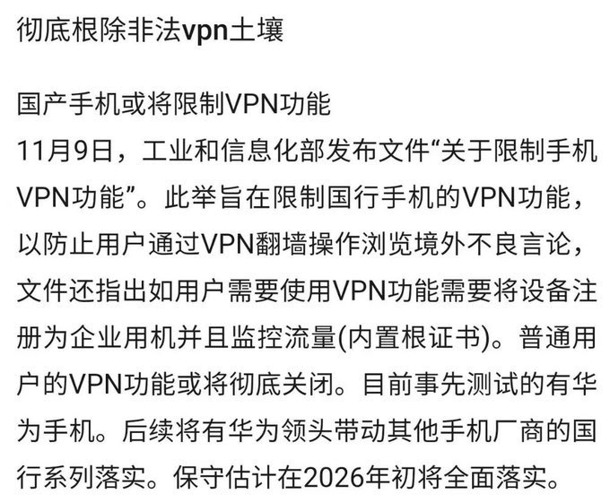
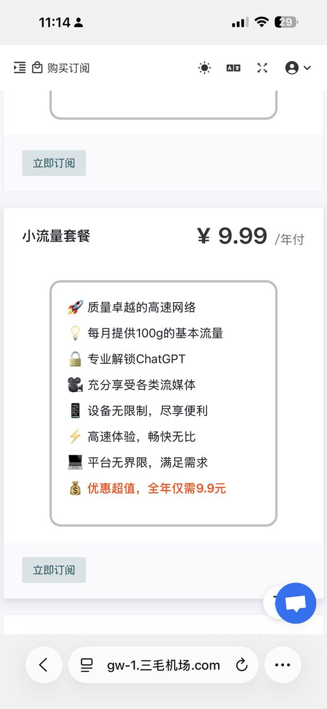

👾Iris-de-lux
@theforeveriris
@kaylyn_0x Fake. To deceive ordinary people, the function of VPN is far more than dealing with gfw, and the way to cross gfw is far more than VPN.


凯林
@kaylyn_0x
彻底根除非法 VPN 土壤，幸亏我用的是苹果全家桶。Shadowrocket 小火箭能直达各家机场。这么多年换了很多家，其中三毛机场是我使用性价比最高的
为什么叫三毛机场，因为最低包月只要 3 毛😂，真是便宜到离谱，他家机场能运营这么多年不跑路也是奇迹！
我习惯用的套餐是：包年 9.99 元，每月 100g https://t.co/QDnIMV7YSV